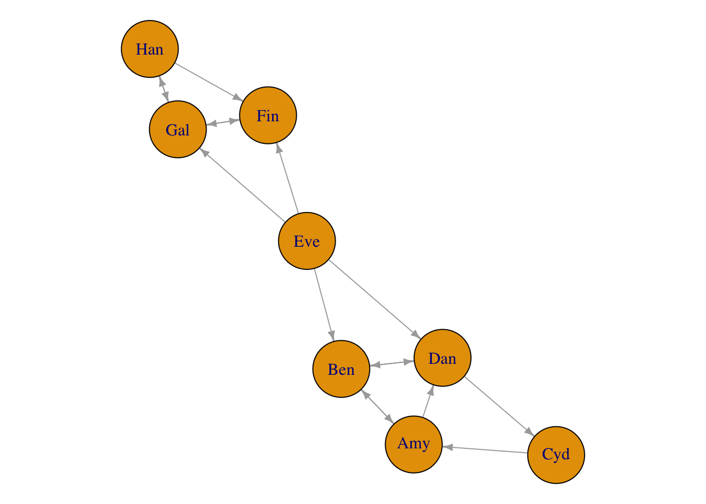
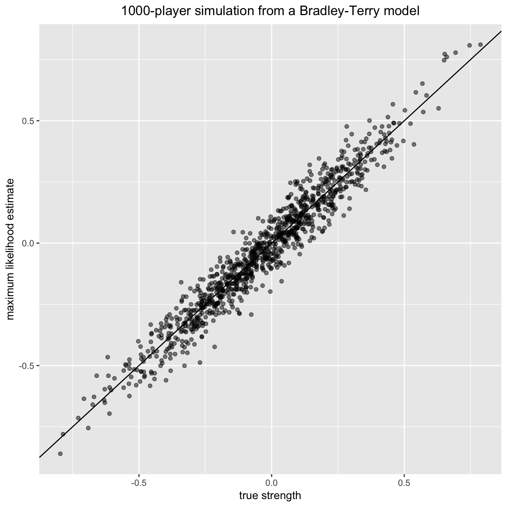

The Bradley-Terry model (Bradley and Terry 1952) is a popular method for finding the probabilities for each item in a set being preferred over each of the others, based on repeated pairwise comparisons between the items of the set. It is used to assign a strength parameter to each item in a group, on the basis of a number of pairwise comparisons between those items. An overall ranking may then be formed on the basis of these strengths.
The model is popular in a sporting context, where the set may be a league and the items are players or teams within that league. The comparisons are matches between the players or teams and the strength parameter represents the overall skill of that player or team. Extensions of the Bradley-Terry model have also been used to rank chess players (Elo 1978) and NASCAR drivers (Hunter 2004). For a non-sporting example, the Bradley-Terry model has been used to derive influence rankings for journals, where the comparison between two journals are the citations from each to the other (Stigler 1994; Varin, Cattelan, and Firth 2016).
In recent years, the de facto method for fitting Bradley-Terry models has been to find the maximum likelihood estimate using the MM-algorithm of (Hunter 2004). However, the existence and uniqueness of the MLE is only guaranteed under certain assumptions on the data set, as first described by Ford (1957). As an alternative to finding the MLE, Caron and Doucet (2012) have proposed a Bayesian approach.
The CRAN package BradleyTerry2 is a well-established package for fitting the Bradley-Terry model. The BradleyTerryScalable package is not as fully-featured, for example it does not allow for home-advantage, nor can it incorporate covariate information. However, BradleyTerryScalable is designed to do one thing well, namely to fit the Bradley-Terry model to large and potentially sparse datasets. It can easily handle much bigger datasets, with many more items. Moreover, unlike BradleyTerry2, BradleyTerryScalable can be used to find both the MLE and a Bayesian MAP estimate of the strength parameter, thus enabling the model to be fitted even when the underlying comparison graph is not fully connected. As with BradleyTerry2, a great deal of care has been taken to provide a simple and intuitive user interface.
In the Background section, we first present the Bradley-Terry model, and the conditions under which the its maximum likelhood estimate exists. We then present algorithms that can be used to find the MLE and MAP estimates.
In the BradleyTerryScalable section, we present our package, and demonstate its use on a couple of toy datasets, as well as a larger, synthetic dataset.
Consider a set of \(K\) items. Without loss of generality, we will refer to the outcome of the comparison as a win for one item and a loss for the other. For items \(i\) and \(j\), the Bradley-Terry model assumes:
\[ p_{ij} = \mathbb{P}(i \text{ beats } j) = \frac{\pi_i}{\pi_i + \pi_j}, \] where \(\pi_k\) is a positive-valued parameter which represents the strength of item \(k\), for \(k = 1,\ldots, K\). We denote \({\pi} = \{\pi_k\}_{k = 1}^K\). Let \(w_{ij}\) be the number of times that \(i\) wins against \(j\) and \(n_{ij} = w_{ij} + w_{ji}\) be the number of comparisons between \(i\) and \(j\), and assume, by convention, that \(w_{ii} = 0\). Then, assuming that the outcome of each match is independent, the log-likelihood based on model is
\[ \ell({\pi}) = \sum_{i = 1}^{K}\sum_{j = 1}^{K} [w_{ij}(\log \pi_i - \log(\pi_i + \pi_j))]. \] Since \(\ell({\pi}) = \ell({\alpha\pi})\) for \(\alpha > 0\), for identifiability we need a constraint on the parameter space: we take this to be \(\sum_{i = 1}^K \pi_i = K\).
An alternative parameterisation of the Bradley-Terry model is to set \(\beta_k = \log \pi_k\), which leads to the logit-linear form \[ \text{logit}[p_{ij}] = \beta_i - \beta_j. \]
There is a graph-theoretic interpretation of the comparison data that will prove useful. We define the comparison graph to have as its nodes the \(K\) items and we let there be a directed edge \((i, j)\) whenever \(i\) has beaten \(j\) at least once. The weight on that edge is \(w_{ij}\).
Ford (1957) noted that if it is possible to partition the items into two groups, A and B, such that no item in A has ever been compared to an item in B, then there is no ground for rating any item in A with respect to any item in B. Any items who win all their comparisons (or groups of items who win all their comparisons relative to another group) also cause problems, for then there is no finite maximiser of the log-likelihood. Therefore, for a unique, finite MLE to exist, it is necessary assume the following: In every possible partition of the items into two non-empty subsets, some item in the second set beats some item in the first set at least once. Equivalently:
For a unique finite MLE to exist, the comparison graph must be fully connected (i.e. there is a directed path from \(i\) to \(j\), \(\forall i, j\)).
To find the MLE of the Bradley-Terry model, Hunter (2004) proposed using an MM-algorithm (Lange, Hunter, and Yang 2000). This leads to a fixed-point iteration:
\[ \pi_i^{(n+1)} = \frac{W_i}{\sum_{j=1}^K \frac{n_{ij}}{\pi_i^{(n)} + \pi_j^{(n)}}}, \] where \(W_i = \sum_{j = 1}^K w_{ij}\) is the total number of comparisons won by item \(i\) and \(n_{ij} = w_{ij} + w_{ji}\) is the number of comparisons between items \(i\) and \(j\).
Caron and Doucet (2012) take a Bayesian approach to estimating \(\pi\). First they introduce latent variables, then the following prior on \(\pi\): \[ p(\pi) = \prod_{i=1}^K \mathcal{G}(\pi_i; a, b). \] This is a conjugate prior, and the resulting log-posterior distribution can be maximised by the EM-algorithm to find the MAP estimate of \(\pi\). This leads to the fixed point iteration \[ \pi_i^{(n+1)} = \frac{a - 1 + W_i}{b + \sum_{j=1}^K\frac{n_{ij}}{\pi_i^{(n)} + \pi_j^{(n)}}}. \] Note that when \(a = 1\) and \(b = 0\), the EM and MM-algorithms are equivalent and the MAP estimate and MLE are identical. Moreover, \(b\) is not likelihood-identifiable, so the estimate of \(\pi\) depends only on the data and the value of \(a\).
# installing from CRAN
install.packages("BradleyTerryScalable")
# installing from GitHub
install.packages("devtools") # if required
devtools::install_github("EllaKaye/BradleyTerryScalable", build_vignettes = TRUE)library(BradleyTerryScalable)The main model-fitting function in this package is btfit(). This function takes as its main argument an object of class btdata. To create a btdata object, use the function btdata(x).
The x argument to btdata can be one of four classes of object:
A matrix (either a base matrix or a class from the Matrix package), dimension \(K\) by \(K\), where \(K\) is the number of items. The \(i,j\)-th element is \(w_{ij}\), the number of times item \(i\) has beaten item \(j\). Ties can be accounted for by assigning half a win (i.e. 0.5) to each item.
A contingency table of class table, similar to the matrix described in the above point.
igraph, representing the comparison graph, with the \(K\) items as nodes. For the edges:
data.frame or tibble), with three or four columns
We anticipate that the user may have data in a three-column data frame that does not match the description of the three-column data frame above. For example, the data frame could have one row per comparison, where the third column contains a code to indicate which of the two items won, say W1 if the item in column 1 won, W2 if the item in column 2 won and D if it was a tie/draw. Alternatively, the third column could contain the win-count, but only relative to the first item, i.e. 1 if the first item wins, 0 if it loses and 0.5 if there was a draw. In this case, the btdata function won’t know that a loss for the first item item should be counted as a win for the second item.
For the cases described in the previous paragraph, the BradleyTerryScalable package provides the codes_to_counts() function, which takes such three-column data-frames and returns a four-column data frame of the required format for passing to the btdata() function.
The BradleyTerryScalable package provides two toy data sets which we’ll use in this demonstration:
data(citations)
citations## citing
## cited Biometrika Comm Statist JASA JRSS-B
## Biometrika 714 730 498 221
## Comm Statist 33 425 68 17
## JASA 320 813 1072 142
## JRSS-B 284 276 325 188data(toy_data)
toy_data## player1 player2 outcome
## 1 Cyd Amy W1
## 2 Amy Ben D
## 3 Ben Eve W2
## 4 Cyd Dan W2
## 5 Ben Dan D
## 6 Dan Eve W2
## 7 Fin Eve W2
## 8 Fin Gal W2
## 9 Fin Han W2
## 10 Eve Gal W1
## 11 Fin Gal D
## 12 Han Gal W1
## 13 Han Gal W2
## 14 Amy Dan W1
## 15 Cyd Amy W1
## 16 Ben Dan D
## 17 Dan Amy W2citations is in an appropriate format to pass to btdata(), whereas toy_data needs to be passed through codes_to_counts() first:
citations_btdata <- btdata(citations)
toy_data_4col <- codes_to_counts(toy_data, c("W1", "W2", "D"))
toy_btdata <- btdata(toy_data_4col, return_graph = TRUE) A btdata object is a list containing two or three elements:
wins: a matrix of the form described in the second bullet point abovecomponents: a list of the fully-connected components of the comparison graph (see the third bullet point above)graph: if return_graph = TRUE, then the igraph object of the comparison graph is returned, which can be useful for visualising the data.library(igraph)
par(mar = c(0, 0, 0, 0) + 0.1)
plot.igraph(toy_btdata$graph, vertex.size = 28, edge.arrow.size = 0.5) 
Information about the btdata objects can be seen through the summary.btdata() method:
summary(citations_btdata)## Number of items: 4
## Density of wins matrix: 1
## Fully-connected: TRUEsummary(toy_btdata)## Number of items: 8
## Density of wins matrix: 0.25
## Fully-connected: FALSE
## Number of fully-connected components: 3
## Summary of fully-connected components:
## Component size Freq
## 1 1 1
## 2 3 1
## 3 4 1Note that components of size 1 will be filtered out in the MLE fit (see next section); the model doesn’t make sense for them.
select_components() can be used to create a subset of a btdata object. In our toy case, the following all give the same subset:
toy_btdata_subset <- select_components(toy_btdata, "3")
toy_btdata_subset <- select_components(toy_btdata, function(x) length(x) == 4)
toy_btdata_subset <- select_components(toy_btdata, function(x) "Cyd" %in% x)
summary(toy_btdata_subset)## Number of items: 4
## Density of wins matrix: 0.4375
## Fully-connected: TRUEAlternatively, set the subset argument in btfit().
summary.btdata(object) gives information on whether or not the underlying comparison graph is fully connected. This affects the type of estimate available for the strength parameter.
Fully-connected: TRUE is printed), then the maximum likelihood estimate (MLE) for the Bradley-Terry model exists and is finite.Fully-connected: FALSE is printed), then we cannot find the MLE for the full dataset. There are two alternatives:
The function btfit() requires two arguments: the data (in the form of a btdata oject), and a, which controls whether the MLE or MAP estimate is returned.
a = 1, the MLE is returned, either on the full dataset if the comparison graph is fully-connected, or else the MLE is found separately for each fully-connected component.a > 1, the MAP estimate is returned, with a as the value of the shape parameter in the prior.See ?btfit() or the Fitting the Bradley-Terry model section above for more details.
citations_fit <- btfit(citations_btdata, 1)
toy_fit_MLE <- btfit(toy_btdata, 1)
toy_fit_MAP <- btfit(toy_btdata, 1.1)The likelihood equations for the Bradley_Terry model, including the prior, give \[ a - 1 + W_i = b\pi_i + \sum_{j \neq i} \frac{n_{ij}\pi_i}{\pi_i + \pi_j}, \] \(i = 1, \ldots, K\). For the algorithm to have converged, we want \(\pi\) to be such that the LHS and RHS of this equation are close for all \(i\). Therefore, we set the convergence criterion as
\[
\left|\frac{a - 1 + W_i}{b\pi_i + \sum_{j \neq i} \frac{n_{ij}\pi_i}{\pi_i + \pi_j}} - 1\right| < \epsilon,
\] for all \(i\). The epsilon argument to btfit() sets the value of \(\epsilon\) (the default is 0.001). There is also a maxit argument to set the maximum number of iterations for each component (the default is 10,000).
btfit objects are lists, and they are not designed to be examined directly, but to be passed to other methods.
btfit objectsummary.btfit(), coef.btfit() and vcov.btfit()
The summary.btfit() method returns a list with
call: the call to btfit()
item_summary: a data frame with one row for each item in the fit (note that this can be fewer than the number of items in the data, if there were any components of size one, or if the fit was on a subset). Items are ranked in descending order within each component
component_summary: a data frame with one row per component in the fit.The standard errors are not returned by default (since the underlying vcov.btfit() function can be slow for large matrices), but can be included by setting SE = TRUE. It is also possible to set a reference item, and to return the summary for only a subset of components (see ?summary.btfit()).
The coef.btfit() method extracts the parameter estimates. This is the strength parameter, on the log scale, constrained (by default) such that the mean of the estimates is zero. By default it is a vector if btfit() was run on the full dataset, or a list of vectors otherwise, but there is also the possibility of returning a data frame by setting as_df = TRUE.
The vcov.btfit() method returns the variance-covariance matrix (or a list of these matrices by component), and also has ref and subset arguments (see ?vcov.btfit()).
summary(citations_fit)## $call
## btfit(btdata = citations_btdata, a = 1)
##
## $item_summary
## # A tibble: 4 x 3
## component item estimate
## <chr> <chr> <dbl>
## 1 full_dataset JRSS-B 1.0604065
## 2 full_dataset Biometrika 0.7897537
## 3 full_dataset JASA 0.3095638
## 4 full_dataset Comm Statist -2.1597241
##
## $component_summary
## # A tibble: 1 x 4
## component num_items iters converged
## <chr> <int> <int> <lgl>
## 1 full_dataset 4 2 TRUEsummary(toy_fit_MLE, SE = TRUE)## $call
## btfit(btdata = toy_btdata, a = 1)
##
## $item_summary
## # A tibble: 7 x 4
## component item estimate SE
## <chr> <chr> <dbl> <dbl>
## 1 2 Han 0.69564153 0.9110076
## 2 2 Gal 0.41253614 0.7675914
## 3 2 Fin -1.10817768 1.0499275
## 4 3 Cyd 0.59239992 0.9905958
## 5 3 Amy 0.03250119 0.6990438
## 6 3 Ben -0.24307179 0.9443103
## 7 3 Dan -0.38182932 0.7124240
##
## $component_summary
## # A tibble: 2 x 4
## component num_items iters converged
## <chr> <int> <int> <lgl>
## 1 2 3 6 TRUE
## 2 3 4 10 TRUEcoef(toy_fit_MAP)## Eve Cyd Han Amy Gal Ben
## 1.90113420 0.47237293 0.24535391 -0.07655328 -0.10175687 -0.42296697
## Dan Fin
## -0.53638389 -1.48120003vcov(citations_fit, ref = "JASA")## 4 x 4 sparse Matrix of class "dgCMatrix"
## citing
## cited JRSS-B Biometrika JASA Comm Statist
## JRSS-B 0.005323938 0.001988435 . 0.001172936
## Biometrika 0.001988435 0.003671841 . 0.001396292
## JASA . . . .
## Comm Statist 0.001172936 0.001396292 . 0.009638953btprob() and fitted.btfit()
The btprob function calculates the Bradley-Terry probabilities that item \(i\) beats item \(j\). By default the result is a matrix if btfit was run on the full dataset, or a list of matrices otherwise, but there is also the possibility of returning a data frame by setting as_df = TRUE. The fitted.btfit() method functions similarly, except it returns the expected number of wins (see ?fitted.btfit()).
btprob(citations_fit)## 4 x 4 sparse Matrix of class "dgCMatrix"
## citing
## cited JRSS-B Biometrika JASA Comm Statist
## JRSS-B . 0.5672532 0.67936229 0.9615848
## Biometrika 0.43274683 . 0.61779270 0.9502388
## JASA 0.32063771 0.3822073 . 0.9219605
## Comm Statist 0.03841516 0.0497612 0.07803945 .fitted(toy_fit_MLE, as_df = TRUE)## # A tibble: 8 x 5
## component player1 player2 fit1 fit2
## <chr> <chr> <chr> <dbl> <dbl>
## 1 2 Han Gal 1.1406148 0.8593852
## 2 2 Han Fin 0.8586132 0.1413868
## 3 2 Gal Fin 1.6412871 0.3587129
## 4 3 Cyd Amy 1.2728582 0.7271418
## 5 3 Amy Ben 0.5684605 0.4315395
## 6 3 Cyd Dan 0.7259617 0.2740383
## 7 3 Amy Dan 1.2042516 0.7957484
## 8 3 Ben Dan 1.0692677 0.9307323simulate.btfit() and simulate_BT()
There are two functions to simulate data from a Bradley-Terry model. The S3 method simulate.btfit() takes a btfit object which has been fitted on one component (either the full dataset, or a one-component subset). The underlying function simulate_BT() takes an N matrix (i.e. where the \(i,j\)-th element is the number of times items \(i\) and \(j\) have been compared) and a vector pi, the strength parameters of a Bradley-Terry model (note that pi is not the same as the estimates in coef.btfit() and summary.btfit(), which are on the logarithmic scale). Both functions return a wins matrix by default, but can also be set to return a btdata object instead.
For example, we can simulate 100 new datasets from the fitted model for the small citations dataset:
citations_sim <- simulate(citations_fit, nsim = 100, seed = 1)
citations_sim[1:2]## $sim_1
## 4 x 4 sparse Matrix of class "dgCMatrix"
## citing
## cited JRSS-B Biometrika JASA Comm Statist
## JRSS-B . 286 316 285
## Biometrika 219 . 495 725
## JASA 151 323 . 817
## Comm Statist 8 38 64 .
##
## $sim_2
## 4 x 4 sparse Matrix of class "dgCMatrix"
## citing
## cited JRSS-B Biometrika JASA Comm Statist
## JRSS-B . 291 315 273
## Biometrika 214 . 511 723
## JASA 152 307 . 811
## Comm Statist 20 40 70 .As a bigger example, let’s simulate a single instance of a fairly sparse tournament with 1000 items (or ‘players’), and then fit the Bradley-Terry model to the resulting data:
library(Matrix)
library(dplyr)
library(ggplot2)
set.seed(1989)
n_items <- 1000
## Generate at random a sparse, symmetric matrix of binomial totals:
Nvalues <- rpois(n = n_items * (n_items - 1) / 2, lambda = 1)
notzero <- Nvalues > 0
Nmatrix <- Matrix(nrow = n_items, ncol = n_items)
ij <- which(lower.tri(Nmatrix), arr.ind = TRUE)[notzero, ]
Nmatrix <- sparseMatrix(
i = ij[, 1],
j = ij[, 2],
x = Nvalues[notzero],
symmetric = TRUE,
dims = c(n_items, n_items))
## Generate at random the (normalized to mean 1) 'player abilities':
pi_vec <- exp(rnorm(n_items) / 4)
pi_vec <- pi_vec / mean(pi_vec)
## Now generate contest outcome counts from the Bradley-Terry model:
big_matrix <- simulate_BT(pi_vec, Nmatrix, nsim = 1)[[1]]
big_btdata <- btdata(big_matrix)
## Fit the Bradley-Terry model to the simulated data:
the_model <- btfit(big_btdata, a = 1)
pi_fitted <- the_model $ pi $ full_dataset
## Plot fitted vs true abilities:
plot_df <- tibble(x = log(pi_vec[as.numeric(names(pi_fitted))]),
y = log(pi_fitted))
ggplot(plot_df, aes(x, y)) +
geom_point(alpha = 0.5) +
geom_abline() +
xlab("true strength") +
ylab("maximum likelihood estimate") +
ggtitle("1000-player simulation from a Bradley-Terry model") +
theme(plot.title = element_text(hjust = 0.5))
All code for the package is available at https://github.com/EllaKaye/BradleyTerryScalable and a documentation website is available at https://ellakaye.github.io/BradleyTerryScalable
Bradley, Ralph Allan, and Milton E Terry. 1952. “Rank Analysis of Incomplete Block Designs: 1. the Method of Paired Comparisons.” Biometrika 39 (3/4): 324–45.
Caron, Francois, and Arnaud Doucet. 2012. “Efficient Bayesian Inference for Generalized Bradley-Terry Models.” Journal of Computational and Graphical Statistics 21 (1): 174–96.
Elo, A. 1978. The Rating of Chess Players, Past & Present. London: Batsford.
Ford, Lester R, Jr. 1957. “Solution of a Ranking Problem from Binary Comparisons.” The American Mathematical Monthly 64 (8, Part 2): 28–33.
Hunter, David R. 2004. “MM Algorithms for Generalized Bradley-Terry Models.” The Annals of Statistics 32 (1): 384–406.
Lange, Kenneth, David R Hunter, and Ilsoon Yang. 2000. “Optimization Transfer Using Surrogate Objective Functions.” Journal of Computational and Graphical Statistics 9 (1): 1–20.
Stigler, Stephen M. 1994. “Citation Patterns in the Journals of Statistics and Probability.” Statistical Science 9 (1): 94–108.
Varin, Cristiano, Manuela Cattelan, and David Firth. 2016. “Statistical Modelling of Citation Exchange Between Statistics Journals.” Journal of the Royal Statistical Society: Series A 179 (1): 1–63.